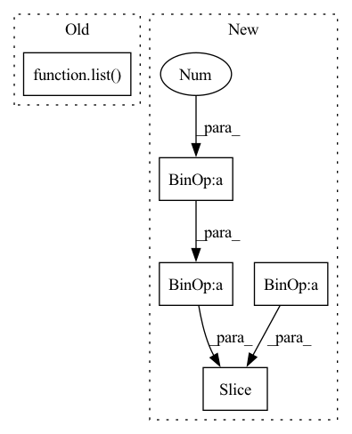

Pattern ID :28412
Before Change
ap = None
// build cache
print("... building dataset cache ...")
self.cached_text = list()
self.cached_text_lens = list()
self.cached_speech = list()
self.cached_speech_lens = list()
for path in key_list:After Change
key_splits = list()
thread_list = list()
for i in range(loading_threads):
key_splits.append(key_list[i * len(key_list) / loading_threads:i + 1 * len(key_list) / loading_threads ])
for key_split in key_splits:
thread_list.append(Thread(target=self.cache_builder_thread, args=(key_split,)))
thread_list[-1].start()In pattern: SUPERPATTERN
Frequency: 3
Non-data size: 5
Instances Fragment ID: 83792158
Project Name: digitalphonetics/ims-toucan
Commit Name: 21527c7e2ea36abafa7885cef64519affbb0e587
Time: 2021-03-01
Author: florian.lux@ims.uni-stuttgart.de
File Name: TransformerTTS/TransformerTTSDataset.py
M Class Name: TransformerTTSDataset
N Class Name: TransformerTTSDataset
M Method Name: __init__(6)
N Method Name: __init__(5)
M Parent Class: Dataset
N Parent Class: Dataset
M File Name: TransformerTTS/TransformerTTSDataset.py
N File Name: TransformerTTS/TransformerTTSDataset.py
M Start Line: 14
M End Line: 51
N Start Line: 15
N End Line: 47
Before Change
os.makedirs(os.path.join(cache_dir, "durations_visualization"))
resource_manager = Manager()
self.path_to_transcript_dict = path_to_transcript_dict
key_list = list( self.path_to_transcript_dict.keys())
// build cache
print("... building dataset cache ...")
self.datapoints = resource_manager.list()
// make processesAfter Change
process_list = list()
for i in range(loading_processes):
datapoint_splits.append(dataset[i * len(dataset) // loading_processes:(i + 1) * len(dataset) // loading_processes])
norm_wave_splits.append(norm_waves[i * len(norm_waves) // loading_processes:(i + 1) * len(norm_waves) // loading_processes ])
for index, _ in enumerate(datapoint_splits):
process_list.append(Process(target=self.cache_builder_process,
args=(datapoint_splits[index], Fragment ID: 83792156
Project Name: digitalphonetics/ims-toucan
Commit Name: d75af2f091227a4695d4887a9a8f23dc5d22b12b
Time: 2021-09-15
Author: florian.lux@ims.uni-stuttgart.de
File Name: TrainingInterfaces/Text_to_Spectrogram/FastSpeech2/FastSpeechDataset.py
M Class Name: FastSpeechDataset
N Class Name: FastSpeechDataset
M Method Name: __init__(13)
N Method Name: __init__(13)
M Parent Class: Dataset
N Parent Class: Dataset
M File Name: TrainingInterfaces/Text_to_Spectrogram/FastSpeech2/FastSpeechDataset.py
N File Name: TrainingInterfaces/Text_to_Spectrogram/FastSpeech2/FastSpeechDataset.py
M Start Line: 36
M End Line: 96
N Start Line: 36
N End Line: 109
Before Change
if self.shuffle:
indices = torch.randperm(len(self.dataset), generator=g).tolist()
else:
indices = list( range(len(self.dataset)))
// add extra samples to make it evenly divisible
indices += indices[:(self.total_size - len(indices))]
assert len(indices) == self.total_sizeAfter Change
def __iter__(self):
// deterministically shuffle based on epoch
local_indices = self.indices[ (self.id-1)*self.num_samples : self.id*self.num_samples ]
assert len(local_indices) == self.num_samples
Fragment ID: 83792157
Project Name: smilelab-fl/fedlab
Commit Name: 4a5dbf1ca21d9f99caf66fcf136fcf784e5867bf
Time: 2021-08-03
Author: 928255708@qq.com
File Name: fedlab_utils/dataset/sampler.py
M Class Name: FedDistributedSampler
N Class Name: FedDistributedSampler
M Method Name: __iter__(1)
N Method Name: __iter__(1)
M Parent Class: torch.utils.data.Sampler
N Parent Class: torch.utils.data.Sampler
M File Name: fedlab_utils/dataset/sampler.py
N File Name: fedlab_utils/dataset/sampler.py
M Start Line: 86
M End Line: 101
N Start Line: 82
N End Line: 86